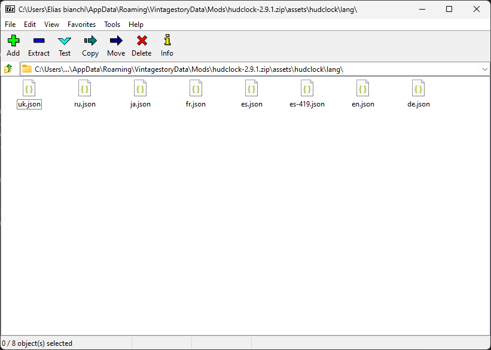
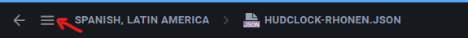

Tutorial de Traduccion de Mods de Vintage Story
Tutorial de Traduccion de Mods de Vintage Story
Tutorial de Traduccion de Mods de Vintage Story
Tutorial de Traduccion de Mods de Vintage StoryEl juego Vintage Story a la hora de cargar los idiomas toma del archivo languages.json el
codigo que debe cargar para traducir el juego (ej: El juego está en Koreano, carga el archivo de traduccion
ko.json), lo mismo pasa con los mods y si este ultimo no cuenta con el archivo que tenga el
mismo nombre no lo cargará. En los mods, cada "modder" elige que archivo de traduccion quiere agregar a su
mod, pero nosotros tambien podemos hacerlo y eso será explicado en este tutorial.
Como primer paso debemos elegir un mod al cual querramos agregar una traducción, para eso nos dirigimos a la
carpeta donde están alojados los mods que hemos cargado al juego
C:\Users\ ...\AppData\Roaming\VintagestoryData\Mods o desde el juego en el Gestor de Mods.

Desde ahí seleccionaremos y abriremos el zip de nuestro mod y entraremos en la siguiente ruta: assets\...\lang donde encontraremos las traducciones que el creador incluyó
Ya sabiendo donde debemos incluir nuestro archivo de traduccion pasamos al siguiente paso
Ahora lo siguiente es obtener nuestro archivo de traduccion, que se puede hacer uno o simplemente buscar en la base de datos de crowdin.com si ya hay uno hecho para el mod y el idioma que se busca.
Traducciones para mods en Crodwin
Entramos al Idioma, buscamos el mod y lo abrimos
Seleccionamos el menu que nos aparece arriba a la derecha y nos desplegará las opciones del archivo
y lo descargamos desde el botón download
.png)
El archivo que se descarga deberemos cambiarle el nombre por el lenguaje que le corresponde segun el archivo
languages.json del juego que se encuentra en:
.. AppData Roaming Vintagestory assets game lang languages.json
Ejemplo del archivo languages.json del momento en que este tutorial se hizo:
[
{
"code": "en",
"englishname": "English",
"name": "English"
},
{
"code": "ar",
"englishname": "Arabic (41% complete)",
"name": "عربى"
},
{
"code": "nl",
"englishname": "Dutch (33% complete)",
"name": "Nederlands"
},
{
"code": "cs",
"englishname": "Czech (54% complete)",
"name": "Čech"
},
{
"code": "fr",
"englishname": "French (100% complete)",
"name": "Français"
},
{
"code": "de",
"englishname": "German (85% complete)",
"name": "Deutsch"
},
{
"code": "eo",
"englishname": "Esperanto (46% complete)",
"name": "Esperanto"
},
{
"code": "it",
"englishname": "Italian (100% complete)",
"name": "Italiano"
},
{
"code": "ja",
"englishname": "Japanese (100% complete)",
"name": "日本語",
"linebreakBehavior": "AfterCharacter"
},
{
"code": "ko",
"englishname": "Korean (68% complete)",
"name": "한국어",
"linebreakBehavior": "AfterCharacter"
},
{
"code": "nl",
"englishname": "Dutch (33% complete)",
"name": "Nederlands"
},
{
"code": "pl",
"englishname": "Polish (92% complete)",
"name": "Polski"
},
{
"code": "pt-pt",
"englishname": "Portuguese (38% complete)",
"name": "Português"
},
{
"code": "pt-br",
"englishname": "Portuguese (Brazil) (73% complete)",
"name": "Português, brasileira"
},
{
"code": "ru",
"englishname": "Russian (100% complete)",
"name": "Русский"
},
{
"code": "es-es",
"englishname": "Spanish (76% complete)",
"name": "Español"
},
{
"code": "es-419",
"englishname": "Spanish, Latin America (79% complete)",
"name": "Español, latinoamerica"
},
{
"code": "sk",
"englishname": "Slovak (100% complete)",
"name": "Slovensky"
},
{
"code": "sv-se",
"englishname": "Swedish (48% complete)",
"name": "Svenska"
},
{
"code": "uk",
"englishname": "Ukrainian (93% complete)",
"name": "Українська"
},
{
"code": "zh-cn",
"englishname": "Chinese (99% complete)",
"name": "Chinese"
}
]
(ej.: si es para frances,
le cambiaremos el nombre a fr.json) y lo agregaremos al zip del Mod en la carpeta que buscamos
en el Primer paso.
Felicitaciones tu mod ya está traducido!!!